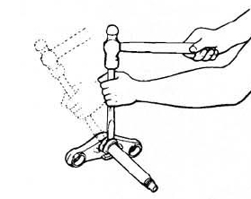
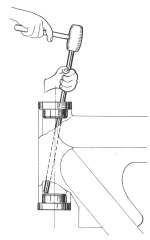
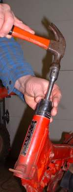
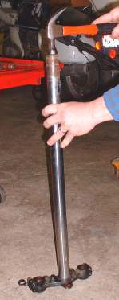
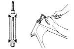
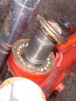

|
"Because strait is the gate, and narrow is the way, which leadeth unto life, and few there be that find it." Matthew 7:14 ¶ If we want to steer straight and narrow our Steering Bearings must be in good condition. Motorcycle Steering Bearings come in three styles.
The entire basic steering assembly is called a Triple Tree, Triple Clamp, Steering Head, Steering Head Yoke, or Steering Stem. Up until around 1985 most, but not all, bikes used loose ball bearings for their steering races. These bearings have upper and lower outer races that are a tight press fit in the frame and a lower inner race that is press fitted to the steering stem. The upper inner race is a loose fit.
The balls are held to the races with grease during assembly. A large nut, threading onto the steering stem, holds the lower triple tree (Lower Fork Yoke), balls, and races to the frame neck (Steering Head). Tighten this nut until there is no play in the bearings, but the triple tree still moves freely. Now install the top triple tree (Upper Fork Yoke), the second steering stem nut and then the front forks. Most late model bikes use either tapered roller bearings or caged ball bearings. Caged ball bearings and tapered roller bearings are lubed the same way and are much easier to handle. I once regreased the steering bearings on a BMW R69S. This bike uses loose ball bearings and has a leading link front end. Even with the front wheel removed that front end felt like it weighed a thousand pounds. I slid everything together and "Ping" one lousy ball bearing popped out. I recounted all the balls, cleaned everything and relubed them so they would stay in place. I tried again. "Ping" out popped one ball again! Do it again and third time was the charm, in it slid with all ball bearings in place. Regular Triple Trees weigh about five pounds and usually go together smoothly on the first try. Just remember to count the number of balls you take out and put the same number back in. Most newer bikes use tapered roller bearings. Roller bearings use caged rollers in place of ball bearings. When they are fitted to the triple tree, Tapered Roller Bearings normally use a tight fit on the lower bearing and a loose fit on the top bearing.
    To install the bearing races into the upper and lower frame neck you can drive them in with a large socket or you can make a press. To use a socket, pick one that is the same diameter as the bearing race you are trying to install. Turn the socket upside down and put in a 6" extension onto the socket through the open end. Now you have a nice flat driver of the right diameter to drive the race into the frame neck. Put the race on the frame neck and gently drive it into the neck with a hammer.
 Grease up the bearings and slide the fork stem through the frame neck and put on the top bearing and nut or the top triple tree. Now tighten the nut. On most bikes you will want to tighten the nut till all play is removed but the Steering Stem moves smoothly. Torque the steering stem adjuster nut to about ten foot pounds of torque and then loosen the adjusting nut about an eighth of a turn. Some bikes require twenty-five to thirty-five foot pounds of torque, turn the triple tree back and forth five or six times, then loosen the adjusting nut till it turns smoothly. The basic idea is to set the bearings in tight and then loosen up the adjustment nut till everything turns smoothly with no detectable play. Then put on the top triple tree and torque the top nut. The top nut, that holds on the top triple tree, can require as much as eighty foot pounds of torque. Check your shop manual! Adjust caged ball bearings the same way as tapered roller bearing. The reason for the higher initial torque is to make sure the bearing races and balls are fully seated in the frame steering head. There are lots of different ways to hold the steering bearings and top Triple Tree on. Some bikes have a nut and a pinch bolt to secure the top Triple Tree. Others have an adjuster nut to adjust bearing tightness, then the top Triple Tree is installed and held on with a bolt on the steering stem. Still others use an adjusting nut and a second jam nut to hold the adjusting nut in place. Sometimes there will also be a Lock Washer with bendable ears to lock the adjusting nut in place. Again, check your shop manual! To check the Triple Tree bearings put the bike on it's center stand or otherwise lift the front wheel off the ground. With the front wheel pointing straight forward, grasp the lower fork legs with your hands and try to move the forks forwards and backwards. If there is any play or if the if the forks do not turn from stop to stop smoothly, adjustment or repair is indicated.  Looks pretty good doesn't it?
Wear comes from one of three things.
I've seen worn steering bearings that tended to keep the steering in one place. You could turn the handlebars to the right or left OK but with the handlebars straight forward there is a definite "Groove" that the steering sort of "Falls" into. I've seen this on high mileage street bikes with roller bearings. I've also seen it on dirt bikes with ball bearings which have spent many hours riding in the back of pickup trucks. To get rid of this the bearing must be replaced. If rust or dirt has gotten into the bearings they should be replaced. Sometimes you can clean the rust or dirt out, regrease the bearing and everything will work OK. You will have to decide on a case by case basis. If possible, it is best to replace the bearings.

Copyright © 1999-2007 dansmc.com. All rights reserved. |